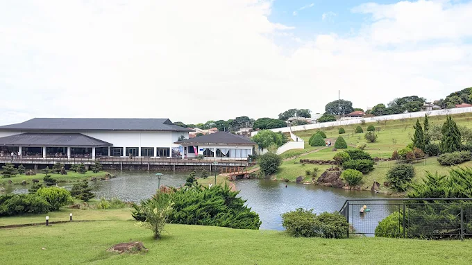
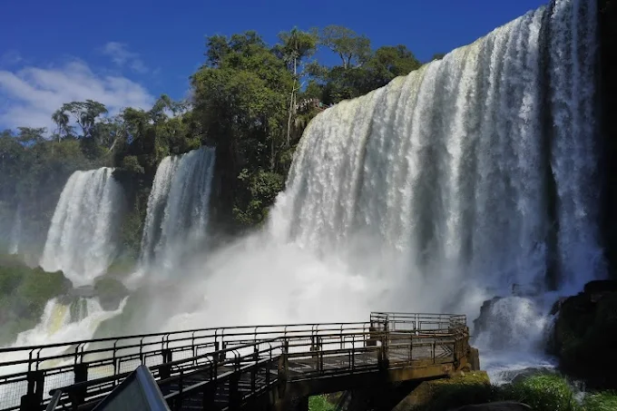

O Palácio da Liberdade
O Palácio da Liberdade é uma importante edificação que compõe o Circuito Liberdade, um dos maiores circuitos culturais do mundo. É o antigo local de trabalho do Governador de Minas Gerais, agora sediado no Edifício Tiradentes, na Cidade Administrativa Presidente Tancredo Neves. O edifício também foi residência de diversos chefes do Executivo estadual.
Sua pedra fundamental foi lançada em 07 de setembro de 1895 e o início de suas obras data de 25 de novembro do mesmo ano. Inaugurado em 1898, um ano após Belo Horizonte, foi palco de importantes acontecimentos da história do estado.
À época da transferência da capital de Ouro Preto para Belo Horizonte, pensou-se em construir a sede do governo e alguns dos órgãos a ele subordinados em um local privilegiado. Do alto da atual Avenida João Pinheiro, o Palácio da Liberdade permitia vista panorâmica da recém-construída cidade.
Em torno dele, outros edifícios sediavam as secretarias – mas algumas delas chegaram a funcionar dentro do Palácio. As palmeiras imperiais enfileiradas em frente ao portão principal da edificação formam até hoje um corredor que parece querer transportar as pessoas para a construção mais imponente do local.
O então Palácio Presidencial centralizava o poder nivelado acima da cidade e dos edifícios, afirmando hierarquia e suntuosidade. Para as ruas ao redor da Praça, se mudou o alto escalão do funcionalismo público vindo de Ouro Preto – tanto os alocados nas diversas secretarias e autarquias localizadas da Praça da Liberdade quanto os que trabalhavam dentro do Palácio. Em função disso, o bairro em torno do edifício foi nomeado de Funcionários – o que permanece até a atualidade.
Com um traçado eclético, o Palácio da Liberdade foi projetado pelo arquiteto José de Magalhães, mesclando elementos do classicismo romântico francês na fachada e neobarrocos e renascentistas italianos. No interior, a tão imponente escadaria foi fundida na Bélgica e trazida em blocos para o Brasil. Da França, vieram móveis, tapetes, cristais e até mesmo os talheres.
Paul Villon, em 1898, foi contratado para projetar os jardins do Palácio Presidencial. O mesmo profissional cuidou do paisagismo da Praça da Liberdade. Nas primeiras décadas, os jardins do Palácio eram prolongamentos da Praça, sem as grades que hoje cercam o edifício. O cercamento foi necessário em função do aumento do tráfego de veículos nas ruas ao redor do prédio a partir de 1967.
De influência inglesa, os jardins do Palácio aliam o verde ao concreto nas obras de arte, lago, quiosque, árvores, plantas, pedras e no belo orquidário. Apreciar seus elementos é remeter à época da construção da cidade de Belo Horizonte, bem como aspectos históricos, decorativos, simbólicos, além, é claro, da diversidade de espécies da flora.
Entre os anos de 2004 e 2006, o Palácio da Liberdade passou por intensa campanha de restauro. Hoje, já não é mais sede oficial do governo de Minas Gerais. Mas sua importância e centralidade permanecem. Seu impressionante estado de conservação convida para uma visita agradável e cheia de descobertas de elementos memorialísticos, políticos, arquitetônicos.
A equipe do Programa Receptivo e Educativo do Palácio da Liberdade, gerenciado pela APPA – Cultura & Patrimônio, promove visitação pública gratuita, além de diversas ações periódicas para democratizar o acesso ao espaço e aproximar a população daquele que era o centro do poder e hoje se tornou um dos mais importantes símbolos da memória e da história da cidade de Belo Horizonte e do estado de Minas Gerais.
A visitação e a programação educativa/cultural do Palácio da Liberdade contam com patrocínio master da Copasa, realização do Governo do Estado de Minas, por meio da Secretaria de Estado de Cultura e Turismo, Fundação Clóvis Salgado e do Circuito Liberdade. A correalização é da APPA – Cultura & Patrimônio, por meio de Termo de Parceria firmado em 2023. As atividades culturais do Palácio da Liberdade integram o programa Minas Criativa.

O projeto do Parque do Japão Memorial Imin 100 - surgiu em 2006 com a finalidade de homenagear todos os imigrantes que se estabeleceram em Maringá, em especial os japoneses que, no ano de 2008 completou 100 anos de Brasil. Em 10 de maio de 2006, a prefeitura de Maringá e a OSCIP (Organização da Sociedade Civil de Interesse Público) - "Parque do Japão - Memorial IMIN 100" lançaram a pedra fundamental para a construção do Parque do Japão. Este espaço foi concebido para disponibilizar alguma das formas de expressão mais significativas da milenar cultura japonesa, que ocupará uma área de 100.000m² e, independente da sua funcionalidade artística, cultura e esportiva, vai se constituir num espaço de preservação ambiental, para ressaltar a integração do homem com a natureza, de forma contemplativa e harmônica.

Sua história começa há mais ou menos 200 mil anos atrás: as quedas surgiram devido a um acidente geográfico ocorrido na bacia do Paraná. Isso porque, cerca de 18 km antes do rio Iguaçu se juntar ao rio Paraná, ele sofre um desnível de terreno que pode alcançar 80 metros de altura. Esse desnível acabou dando origem às nossas adoradas Cataratas do Iguaçu, uma das mais visitadas do mundo!
Seu nome é de origem indígena e significa “água grande”, refletindo a grandiosidade desse espetáculo natural. E põe grande nisso, já que a largura total das Cataratas do Iguaçu alcança 2700 metros, sendo aproximadamente 800 metros somente no lado brasileiro.
São mais de 270 quedas, sendo os principais nomeados como Floriano, Deodoro, Benjamin Constant, União e Santa Maria.